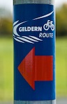

Der Niederrhein ist bekannt für seine vielfältigen Radwege und Touren. Nutzen Sie die Gelegenheit und legen Sie einen erfrischenden Zwischenstopp in unserem Café ein.
Neben der großen Auswahl an Kuchen und Kaffee bekommen Sie selbstverständlich auch kühle alkoholfreie Getränke sowie Bier oder ein zünftiges Radler.
Weitere Informationen zur Geldern-Route und Tourenvorschläge finden Sie auf der Website der Stadt Geldern.